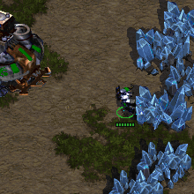
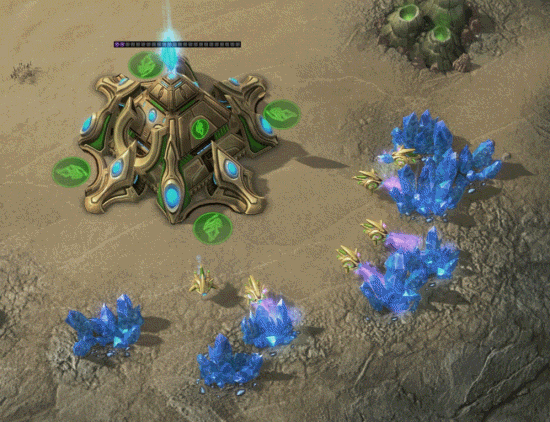

Postgres 9.6
Parallelization
Tomasz Stachewicz @ WRUG 15.03.2017
Jak działa Postgres
i inne bazy danych
operacja sekwencyjna, jeden wątek

marzenie o równoległości

1. Sequential scans
2. Aggregation
3. Joins
Ograniczenia
wszędzie ograniczenia
(pytania?)